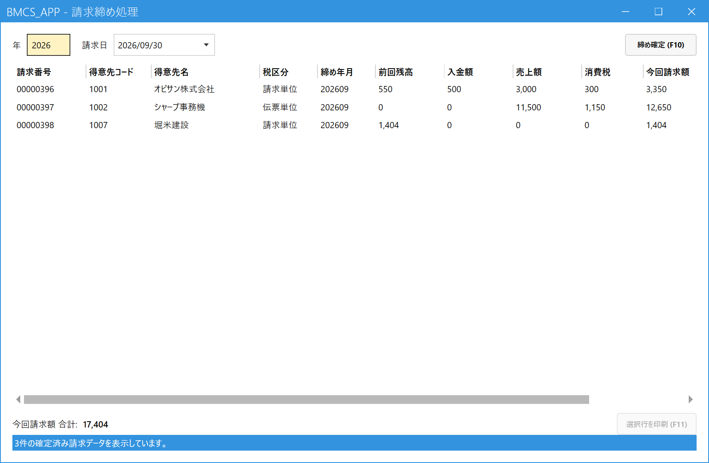
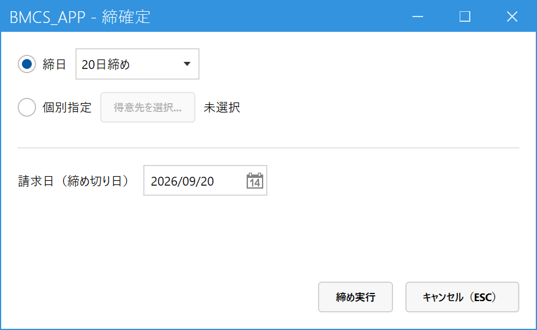

請求を締める（月次請求書を作る）
こんなときに使います
20日締め・末日締めなどの締め取引の得意先について、締め日までの売上をまとめて請求データにし、請求書を印刷します。
官公庁・学校など都度請求の得意先は、この画面ではなく明細請求書発行を使います。
20日締め・末日締めなどの締め取引の得意先について、締め日までの売上をまとめて請求データにし、請求書を印刷します。
官公庁・学校など都度請求の得意先は、この画面ではなく明細請求書発行を使います。
締めを実行すると、対象の売上は「請求済み」になり、訂正・取消ができなくなります。また、締め日以前の日付の売上・入金は新しく登録できなくなります。実行前に、締め日までの売上がすべて登録済みか確認してください。
1.画面を開く
メインメニューの「請求」の中の「請求締め処理」をクリックします。開いた画面は、これまでに締めた請求データの一覧です（これから締める内容の予告ではありません）。

- 年：見たい年を4桁で入れます（初期値は今年）。
- 請求日：その年に締めた日付の一覧から選びます。選んだ日に確定した請求データが下に出ます。
- 確定済みの請求データ。今回請求額 ＝ 前回残高 − 入金額 ＋ 売上額 ＋ 消費税です。
- 締め確定 (F10)：新しく請求を締めるときに押します（2章）。
- 選択行を印刷 (F11)：請求書を印刷・再印刷します（3章）。
2.請求を締める
締め確定 (F10) を押すと、「締確定」の小さな画面が開きます。

- 締日で選ぶ：「20日締め」「末日締め」など、得意先マスタに登録されている締日から選びます。その締日の得意先がまとめて締まります。
- 個別指定で選ぶ：特定の得意先だけを締めたいとき。「得意先を選択...」から選びます。
- 請求日（締め切り日）：請求書に印字される日付で、「ここまでの売上」を締める日です。締日を選ぶと、ふさわしい日付が入ります。
- 締め実行：確認メッセージで「はい」を選ぶと確定します。やめるときは Esc。
実行すると、その請求日の請求データの一覧が表示されます。対象の売上が無く、前回残高もゼロの得意先には請求データは作られません（空の請求書は出ません）。同じ得意先・同じ月は二重には締められません。
3.請求書を印刷する
- 一覧で、印刷したい請求データの行をクリックします。Ctrl・Shift を押しながらクリックすると複数行を選べます。
- 選択行を印刷 (F11)（または行をダブルクリック／Enter）。
- プレビューが開きます。確認して印刷します（PDF保存もできます）。
請求書を失くした・もう一度出したいときも、同じ手順で何度でも再印刷できます。
4.間違えて締めてしまったら
誤って締めた場合は、管理者が締め解除処理で解除し、売上を直してから締め直します。